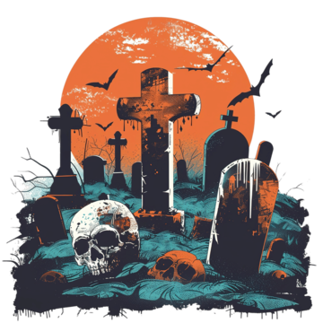

Todos Santos en Bolivia combina creencias indígenas y católicas. Se celebra el 1 de noviembre, cuando se cree que los espíritus de los difuntos regresan al mundo de los vivos.
Se colocan altares con flores, velas, fotografías y alimentos que eran del gusto de los difuntos. Esto simboliza respeto y memoria hacia los ancestros.
Las familias visitan las tumbas de sus seres queridos, decorándolas y realizando oraciones. Es un momento de unión familiar y reflexión sobre la vida y la muerte.

Contacto: jatq2018@gmail.com
Tel: +591 73061654
© 2025 Halloween vs Todos Santos
© HECHO POR JASEFT ANGEL TAPIA QUISBERT